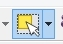
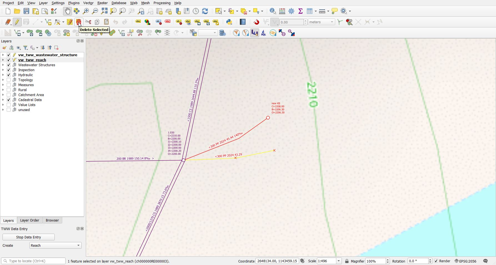
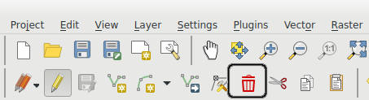
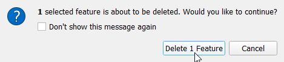
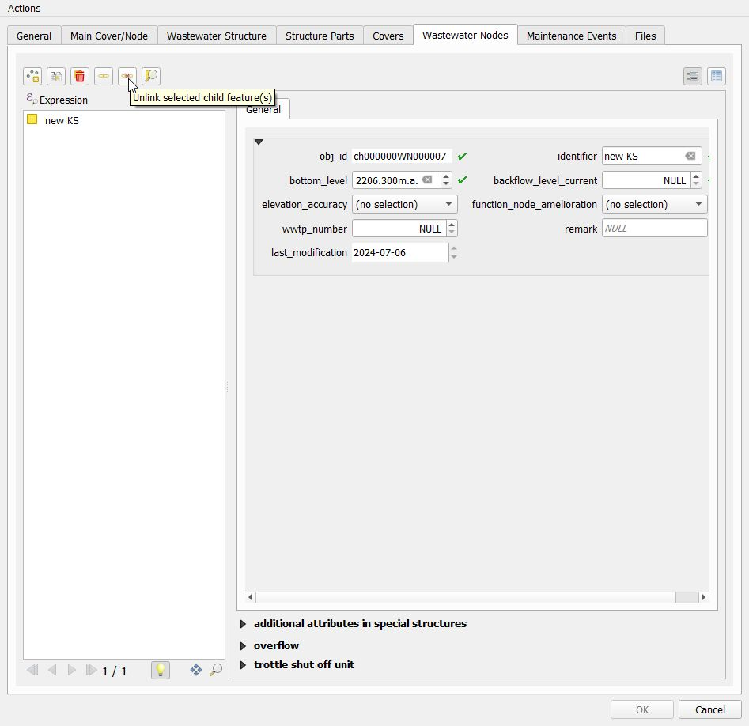
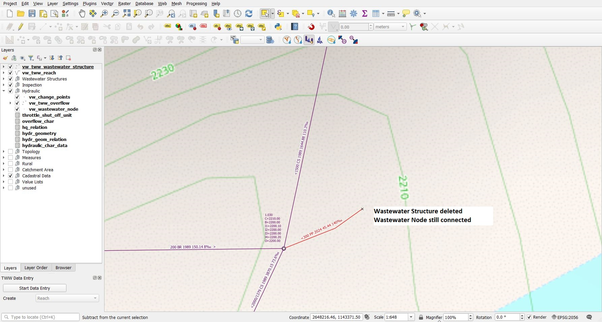
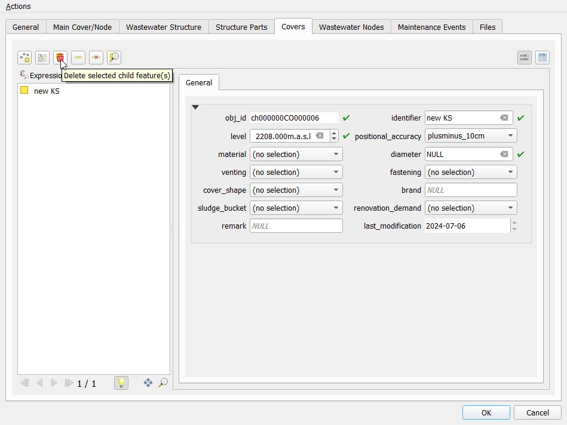
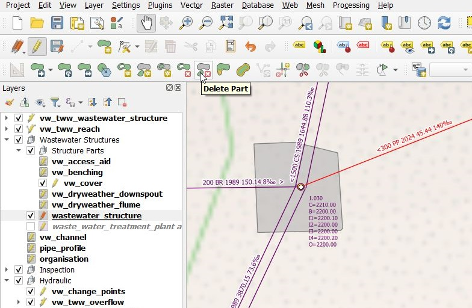
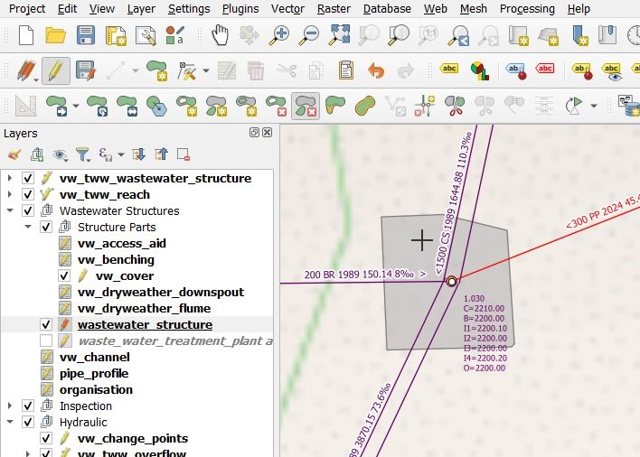

Suppression d’objets
Vous pouvez supprimer des objets ponctuels ou linéaires (avec tous les objets associés) via les couches vw_tww_wastewater_structure ou vw_tww_reach. Il est également possible de sélectionner et de supprimer uniquement un objet spécifique (par exemple un couvercle).
Supprimer un tronçon
Sélectionnez vw_tww_reach et passez en mode édition.
Sélectionnez le/les tronçon(s) que vous voulez supprimer. Vous pouvez cliquer sur un objet ou dessiner une zone de sélection.

Utiliser le menu Editer –> Supprimer les entités sélectionnées pour supprimer.

Note
La façon la plus simple est de presser la touche Delete du clavier. Une autre possibilité est de presser sur le bouton Supprimer qui se trouve dans la barre d’outils Numérisation.

Selon la façon dont vous avez configuré QGIS, la barre d’outils Numérisation peut être cachée ou située à un autre endroit.
Stoppez le mode édition et confirmez les modifications apportées à la couche. Toutes les modifications vont alors être sauvegardées dans la base de données.

Note
La suppression d’un tronçon entraîne également la suppression de toutes les parties de structure qui y sont connectées (par exemple dryweather_downspout). Le canal associé n’est supprimé que s’il n’existe aucun autre élément du réseau de wastewater connecté à ce canal. Si deux tronçons sont connectés à un même canal, celui‑ci n’est supprimé que lorsque les deux tronçons sont supprimés.
Supprimer un regard ou une autre structure de wastewater
Sélectionnez vw_tww_wastewater_structure et passez en mode édition.
Sélectionnez les objets (chambres, structures spéciales etc.) que vous voulez supprimer
Utilisez le menu Edition –> Supprimer les entités pour supprimer.
Stoppez le mode d’édition et confirmez les modifications apportées à la couche. Toutes les modifications vont alors être sauvegardées dans la base de données.
Note
La suppression d’une structure de wastewater entraîne également la suppression de toutes les parties de structure qui y sont associées (couvercle, dispositif d’accès, etc.) ainsi que de tous les nœuds de wastewater connectés. Les champs fk_wastewater_networkelement des reachpoints qui étaient reliés à ces nœuds sont définis à NULL.
Supprimer une structure de wastewater tout en conservant le nœud de wastewater et les connexions associées au nœud de wastewater
Tout d’abord, il est nécessaire de supprimer la relation entre le nœud de wastewater et la structure de wastewater. Comme le champ fk_wastewater_structure n’est pas visible dans la fenêtre des attributs du nœud de wastewater (ce champ n’ayant pas de sens dans les autres cas où le même formulaire est utilisé), vous devez procéder de la manière suivante :
Sélectionnez vw_tww_wastewater_structure et passez en mode édition.
Use the Identify Features tool to open the form of the manhole you want to delete
Passez à l’onglet Wastewater Nodes.
Sélectionnez le nœud qui ne doit pas être supprimé.
Utilisez le bouton Unlink selected child record(s).

Cliquez sur OK et fermez la fenêtre du formulaire.
Le nœud de wastewater ne fait désormais plus partie de la structure de wastewater.
Sélectionnez l’objet (regard, structure spéciale, etc.) que vous souhaitez supprimer.
Utilisez le menu Edition –> Supprimer les entités pour supprimer.
Stoppez le mode d’édition et confirmez les modifications apportées à la couche. Toutes les modifications vont alors être sauvegardées dans la base de données.

Supprimer le couvercle
Sélectionnez vw_tww_wastewater_structure et passez en mode édition.
Sélectionnez l’objet (regard, structure spéciale, etc.) à partir duquel le couvercle doit être supprimé.
Utilisez l’outil Sélectionner une entité pour ouvrir le formulaire
Allez dans l’onglet couvercles
Sélectionnez le(s) couvercle(s) que vous voulez supprimer
Click the button delete selected child features to delete the covers

Cliquez sur le bouton Sauvegarder du formulaire
Stoppez le mode édition et confirmez les modifications apportées à la couche. Toutes les modifications vont alors être sauvegardées dans la base de données.
Deuxième méthode pour supprimer un couvercle
Select the vw_cover layer and change to edit mode
Select the cover
Utilisez Édition → Supprimer les entités sélectionnées.
Arrêtez le mode édition.
Suppression d’éléments de structures
Sélectionnez vw_tww_wastewater_structure et passez en mode édition.
Sélectionnez l’objet (regard, structure spéciale, etc.) à partir duquel un élément de structure doit être supprimé.
Utilisez l’outil Sélectionner une entité pour ouvrir le formulaire
Allez dans l’onglet éléments de structure
Sélectionnez le(s) élément(s) que vous voulez supprimer
Cliquez sur le bouton x rouge pour supprimer les pièces d’ouvrage
Cliquez sur le bouton Sauvegarder du formulaire
Stoppez le mode d’édition et confirmez les modifications apportées à la couche. Toutes les modifications vont alors être sauvegardées dans la base de données.
Supprimer les géométries détaillées
Attention
La suppression d’entités directement depuis wastewater_structure (groupe de couches Wastewater Structures) entraîne la suppression complète de la structure de wastewater de la base de données, et pas uniquement de la géométrie de la structure de wastewater !
Select layer wastewater_structure and change to edit mode
Activate the Delete part tool from the Advanced digitizing toolbar

Le curseur se transforme en croix. Cliquez sur la partie que vous souhaitez supprimer (aucune demande de confirmation n’est affichée : dès que vous cliquez, la partie est supprimée !).

Stoppez le mode d’édition et confirmez les modifications apportées à la couche. Toutes les modifications vont alors être sauvegardées dans la base de données.